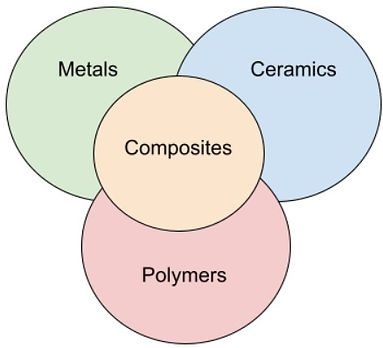

Theory
Learning Focus

By the end of this toolkit, you will be able to:
- Classify engineering materials: Understand the main categories (metals, polymers, ceramics, composites) and their key properties.
- Explain corrosion mechanisms: Understand how and why materials corrode, particularly metals in different environments.
- Evaluate protection methods: Compare different corrosion protection strategies and their effectiveness.
- Select materials for applications: Choose appropriate materials based on properties, environment, and cost considerations.
- Link materials to concrete: Understand how material properties relate to concrete as a composite material (Toolkit 2).
Why this matters: Understanding materials is fundamental to engineering. This toolkit provides the foundation for understanding concrete as a composite material in Toolkit 2, and helps you make informed material choices for your concrete beam project.
Key Notes
Why this matters: Engineers must understand material properties to select the right material for each application. This knowledge directly applies to your concrete beam project, where you'll work with concrete (a composite), steel reinforcement, and formwork materials.
1. Material Categories

Engineering materials are broadly classified into four main categories:
- Metals: Good conductors of heat and electricity, ductile (can be drawn into wires), malleable (can be hammered into sheets). Examples: steel, aluminium, copper. Used for structural members, reinforcement, fasteners.
- Polymers (Plastics): Lightweight, good electrical insulators, can be moulded into complex shapes. Examples: PVC, polyethylene, epoxy. Used for pipes, coatings, adhesives, formwork.
- Ceramics: Hard, brittle, good insulators, resistant to high temperatures. Examples: concrete, brick, glass. Used for structural elements, protective coatings.
- Composites: Made from two or more materials combined to get better properties than either alone. Examples: concrete (cement + aggregate + reinforcement), fibreglass, carbon fibre. Used for high-performance structural applications.
2. Key Material Properties
When selecting materials, engineers consider these properties:
- Strength: Ability to resist applied forces without failure (tensile strength, compressive strength, yield strength).
- Stiffness: Resistance to deformation under load (modulus of elasticity).
- Toughness: Ability to absorb energy before fracture (resistance to impact).
- Durability: Resistance to degradation over time (corrosion, weathering, chemical attack).
- Workability: Ease of shaping, cutting, joining, or processing.
- Cost: Material cost, processing cost, maintenance cost over service life.
For your concrete beam: You'll need to understand how concrete (ceramic composite) and steel reinforcement (metal) work together, and why formwork materials (often timber or polymer) are chosen for their workability and reusability.
3. Corrosion Mechanisms
Corrosion is the deterioration of materials, especially metals, due to chemical reactions with their environment:
- Electrochemical corrosion: Most common type. Requires an anode (where metal loses electrons), cathode (where electrons are gained), electrolyte (conducting solution), and electrical connection. Rusting of steel is electrochemical corrosion.
- Galvanic corrosion: Occurs when two different metals are in contact in the presence of an electrolyte. The more reactive metal corrodes faster.
- Uniform corrosion: Corrosion occurs evenly across the surface (e.g., rusting of unprotected steel).
- Localised corrosion: Corrosion concentrated in specific areas (pitting, crevice corrosion).
Why this matters for concrete: Steel reinforcement in concrete can corrode if the concrete cracks or if chloride ions penetrate. Understanding corrosion helps you understand why proper concrete cover and mix design are critical.
4. Corrosion Protection Methods
Engineers use various methods to protect materials from corrosion:
- Barrier protection: Coating the material to prevent contact with corrosive agents (paint, galvanising, epoxy coatings).
- Cathodic protection: Making the material the cathode in an electrochemical cell (sacrificial anodes, impressed current).
- Material selection: Choosing materials that are naturally corrosion-resistant (stainless steel, aluminium, polymers).
- Environmental control: Reducing exposure to corrosive agents (humidity control, protective enclosures).
- Design modifications: Avoiding crevices, ensuring drainage, using compatible materials.
For concrete: Proper concrete cover, low water-cement ratio, and sometimes epoxy-coated or stainless steel reinforcement protect against corrosion.
5. Damp-Proof Course (DPC)
A damp-proof course is a barrier used to prevent moisture rising through walls or floors:
- Purpose: Prevents water from capillary action (rising damp) which can cause damage, mould, and structural issues.
- Materials: Typically plastic (PVC, polyethylene), bitumen, or metal sheets placed horizontally in masonry walls or under concrete slabs.
- Location: Usually placed just above ground level in walls, or under concrete floor slabs.
Connection to concrete: Understanding moisture movement helps you understand why concrete needs proper curing and protection from water during the early stages.